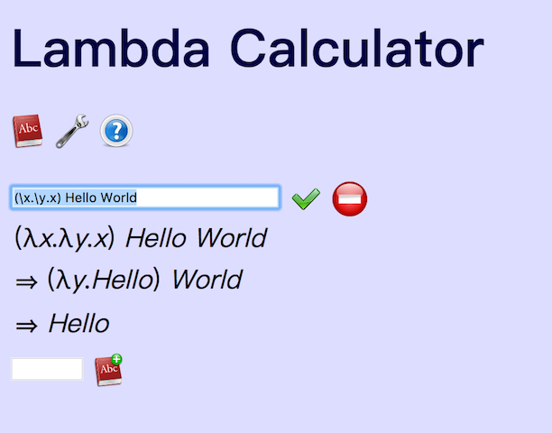

面向眼科医生的λ演算入门教程(7)
二生三
也许是我见得少，物理学的公式里为什么都是连续函数，一个分段函数都没有，即使是分成一份一份的量子力学，也没有一个公式是分情况讨论的。甚至，量子力学的出现就是为了解决黑体辐射中出现的分段函数。
全都是连续函数的，这很奇异啊。
但只要出了理论物理，立刻就是大量的分段讨论了。记得大一学有机化学，老师先用10分钟讲了一个什么规则（貌似是Zaitsev's rule），然后整堂课剩下的时间都在讲这个规则的各种反例。
在纯物理之外的世界，我们需要三叉分支结构，一支接收条件判断，一支指向真值时的操作，一支指向假值时的操作： if True/False then This else That
什么是真，什么是假，哲学家也许一直都在试图定义。但对逻辑学或者数学来说，真假只是一次选择，if True then This, if False then That.
所以，
true=λx.λy.x false=λx.λy.y
true和false都是接收两个参数，true返回前一个，false返回后一个。细看的话，你会发现false和0的定义是一样的。 
 看我在第一课Hello World里面已经展示了，能在Hello World里面塞进这么多伏笔，真是佩服自己。
看我在第一课Hello World里面已经展示了，能在Hello World里面塞进这么多伏笔，真是佩服自己。
有true/false的定义，也还要有各种逻辑运算才行。
and=λp.λq.(p q p) not=λp.(p false true)
看not的结构，λp.(p...)的模式以前出现过，就是把输入调用到前面来。
not true=true false true
true的作用是把输入的两个参数前面那个挑出来，把第一个true当作函数，把后面的false true当作两个输入参数，挑出前面那个，就是false，于是not true=false。精巧。
有了not和and，就有NAND gate与非门了。其他各种逻辑运算也都是可以实现的。
貌似true this that和false this that就已经可以达到if语句要求了。但是如何在不知道条件是true还是false的时候把条件加入到this that前面呢？
其实也跟not类似，用上λp.(p...)的结构
if=λp.λa.λb.(p a b)
这不就是pair么。
所以，二生三。